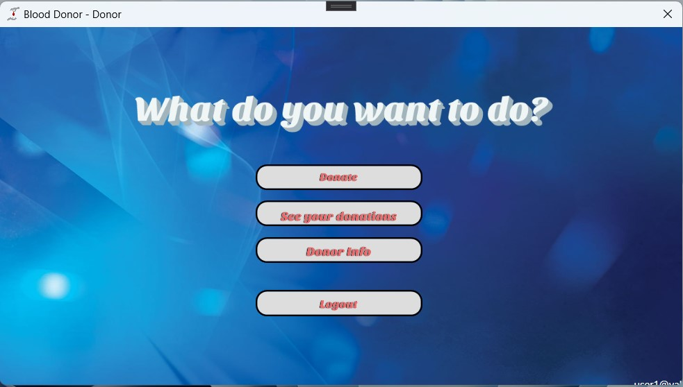
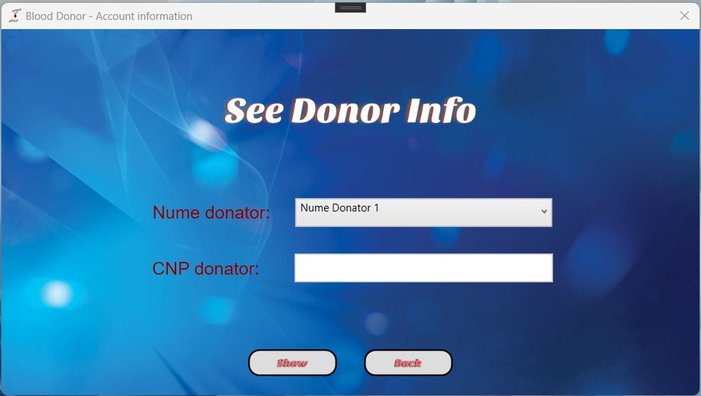
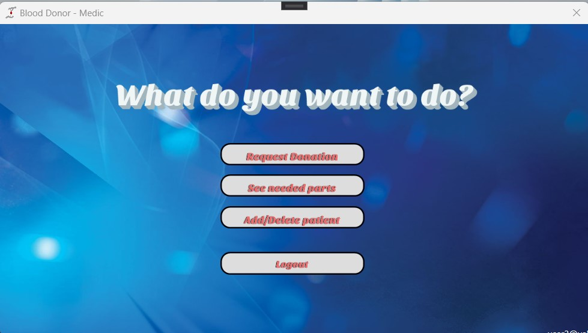
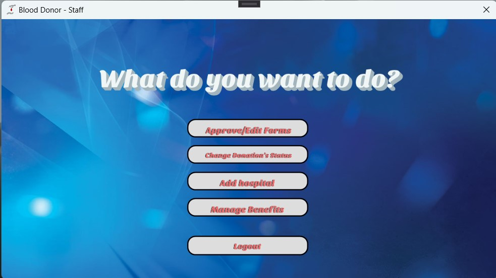
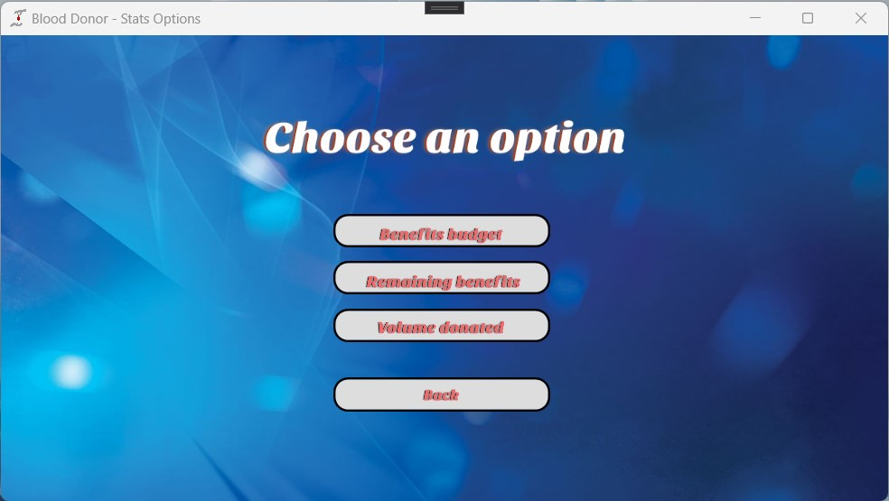

1. Inregistrare/Logare
La deschiderea aplicatiei, utilizatorul alege una din cele 3 tipuri de utilizatori. Dupa alegerea tipului de utilizator, acesta este intampinat de o fereastra de login, de unde se poate alege dintre crearea unui cont nou si logarea intr-un cont deja existent. Pentru accesarea statisticilor legate de aceasta aplicatie, nu este nevoie de niciun cont. Exista, de asemenea, optiunea de "Forgot password", care va permite utilizatorului sa isi schimbe parola pe loc.
Pentru crearea oricarui cont, este nevoie de o adresa de mail valida, prin care se va confirma crearea contului printr-un cod trimis la adresa respectiva.
2.1. Functionalitati donator
Inregistrat ca donator, utilizatorul se poate programa la donare de sange completand un chestional medical apasand pe butonul "Donate". Confirmarea aprobarii cererii va veni pe mail, iar donatorul va avea acces la o lista cu toate donarile efectuate pe acea adresa de mail prin apasarea butonului "See Your Donations".
Pentru a vedea informatii despre fiecare donator, se va alege un nume inregistrat pe contul respectiv si se va introduce CNP-ul persoanei pentru a ne asigura ca nimeni altcineva nu are acces la aceste informatii, decat donatorul in sine.
2.2. Functionalitati medic
Inregistrat ca medic, utilizatorul va putea adauga in baza de date pacientii sai si va putea sa faca cereri de sange de o anumita grupa sanguina, sau doar de anumite componente de sange. De asemenea, acesta poate vedea numarul de cereri deja existente pentru o anumita componenta de sange.
2.3. Functionalitati personal de recoltare
Inregistrat ca personal de recoltare, utilizatorul va putea gestiona cererile de donare, recompensele oferite donatorilor si spitalele aflate in baza de date.
2.4. Statistici
Utilizatorul poate urmari statistici legate de aplicatie, indiferent de tipul acestuia, fara sa fie necesara crearea unui cont. Pentru acest lucru, se apasa pe butonul pentru statistici din meniul principal si se selecteaza tipul de statistici pe care acesta doreste sa le vizioneze.
Pentru mai multe informatii si intrebari, se poate accesa sectiunea de chatbot a acestui site.